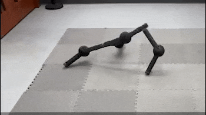
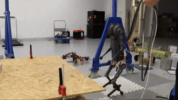
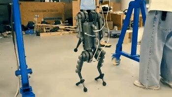
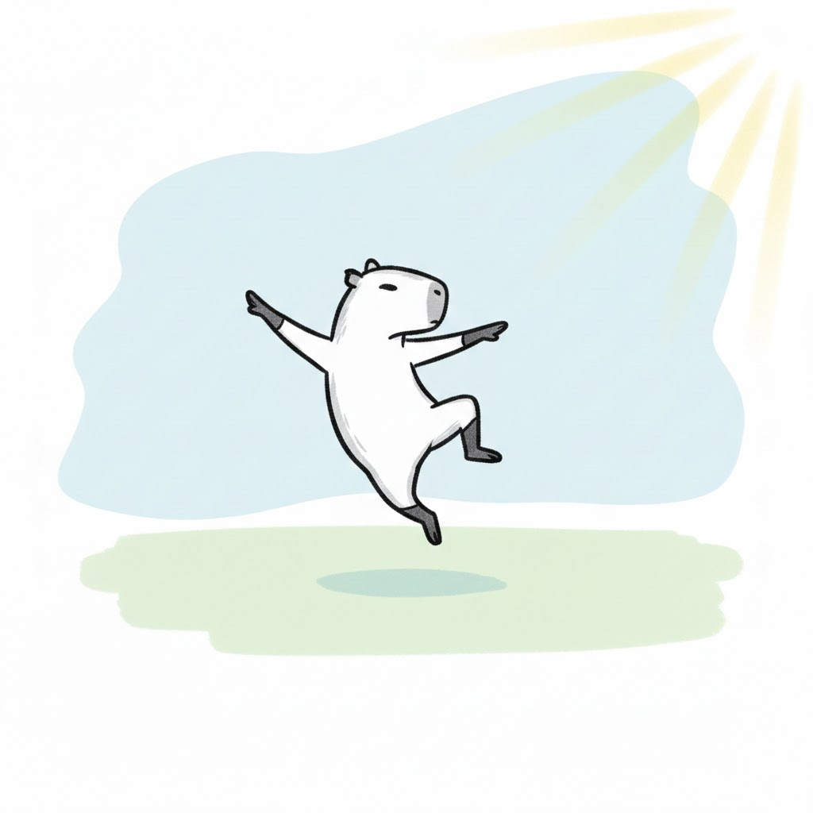
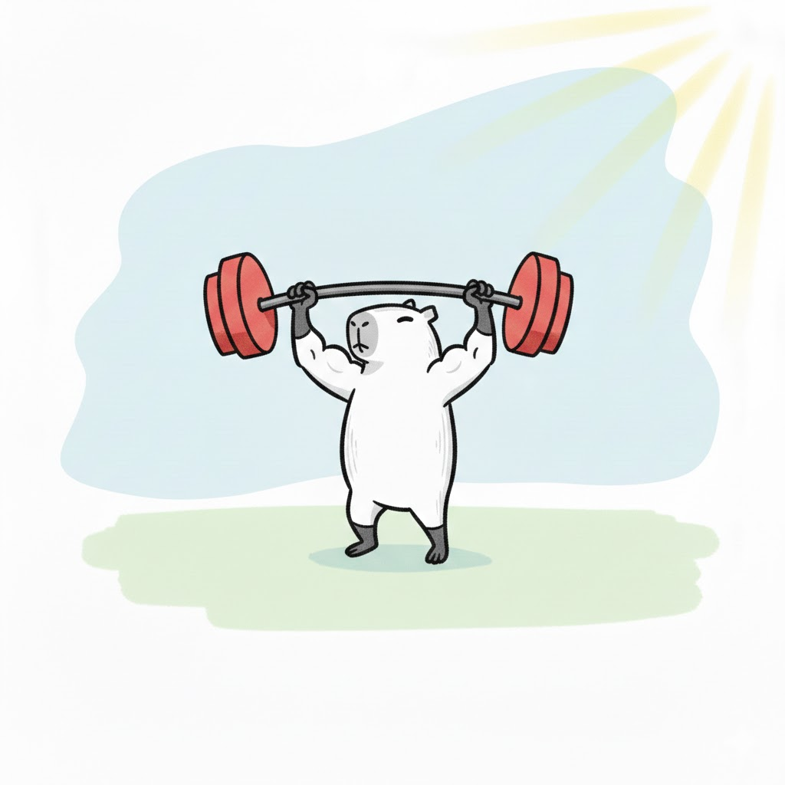
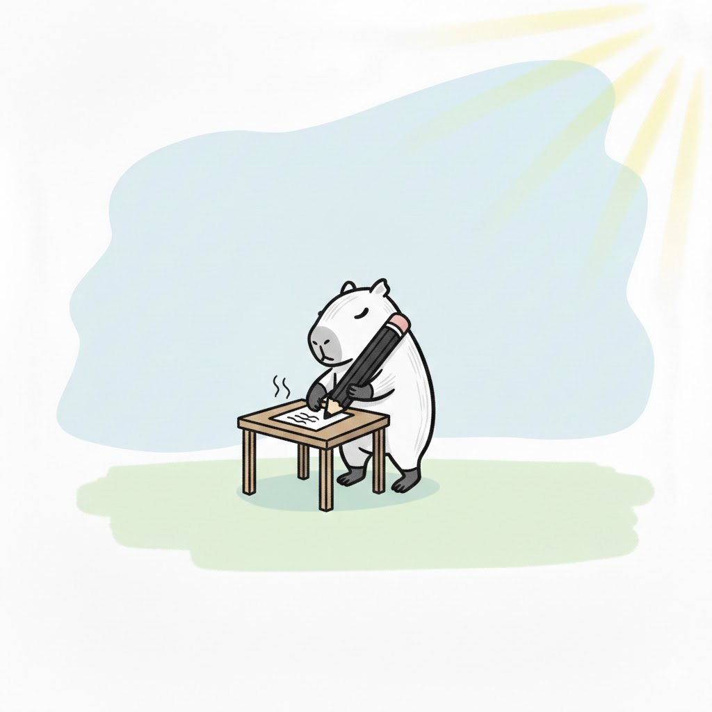

I am a PhD student at Northwestern University (advised by Prof. Sam Kriegman) and founder of Yodamayda Robotics, with over five years of hands-on experience in legged robot sim-to-real transfer. My current research focuses on sequential models for universal locomotion control and generative models for robot design. A full list of my publications is available on Google Scholar, and all software projects can be found on GitHub.





I maintain several open-source libraries focused on robot control, simulation, and learning. Most of my work is public by default. Check out my GitHub.




